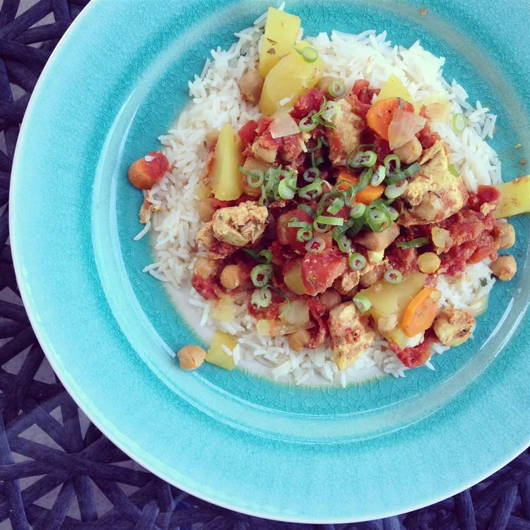

Slow Cooker Chicken Marrakesh

Description
It's so easy to make, it has become a tradition in our household.
Ingredients
- 1 onion, sliced
- 2 cloves garlic, minced (Optional)
- 2 large carrots, peeled and diced
- 2 large sweet potatoes, peeled and diced
- 15 ounces of chickpeas, drained and rinsed
- 2 pounds skinless, boneless chicken breast halves, cut into 2-inch pieces
- 1/2 teaspoon ground tumeric
- 1/2 teaspoon ground cumin
- 1/4 teaspoon ground cinnamon
- 1/2 teaspoon ground black pepper
- 1 teaspoon dried parsley
- 1 teaspoon salt
- 14.5 ounces diced tomatoes
Steps
- Place the onion, garlic, carrots, sweet potatoes, garbanzo beans, and chicken breast pieces into a slow cooker. In a bowl, mix the cumin, turmeric, cinnamon, black pepper, parsley, and salt, and sprinkle over the chicken and vegetables. Pour in the tomatoes, and stir to combine.
- Cover the cooker, set to High, and cook until the sweet potatoes are tender and the sauce has thickened, 4 to 5 hours.